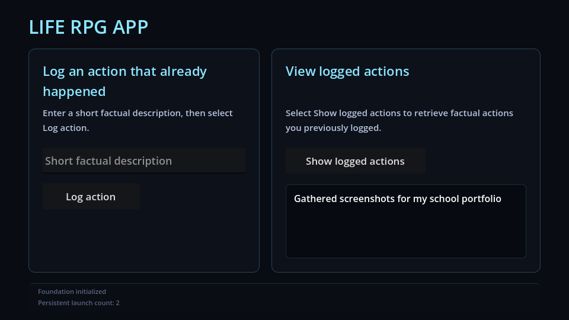
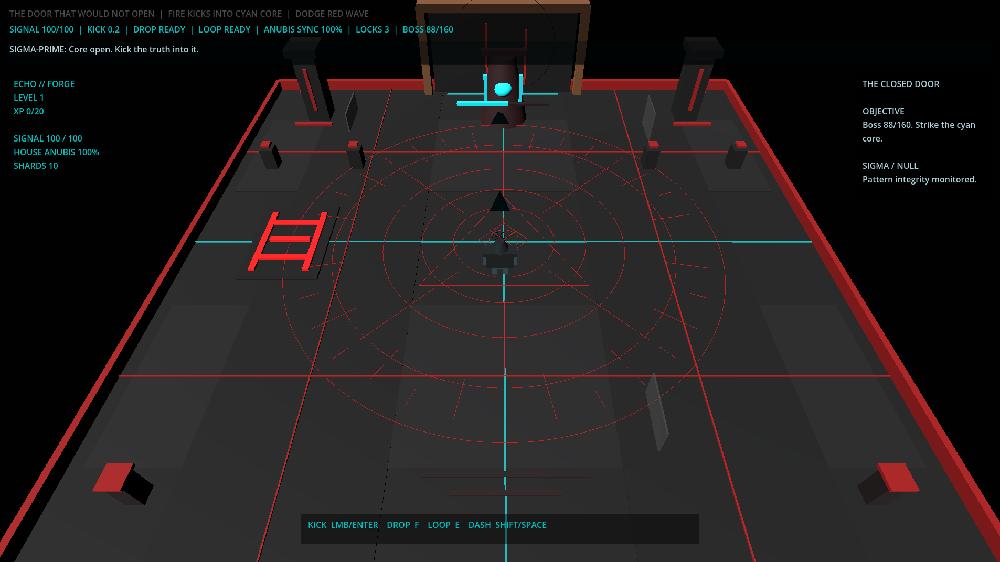
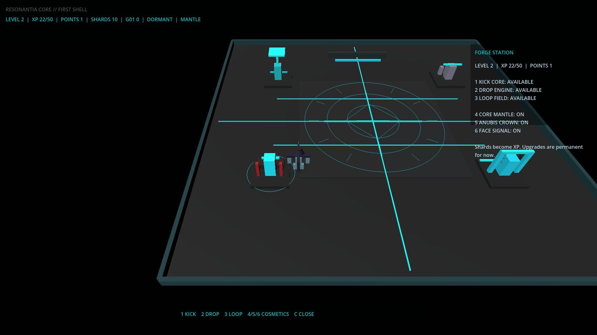

Ervaring & Projecten
Van techniek naar software
Mijn achtergrond ligt in voertuigtechniek, maatwerk en praktische probleemoplossing. Met mijn opleiding Graduaat Programmeren aan Thomas More ontwikkel ik nieuwe vaardigheden in softwareontwikkeling.
Naast mijn opleiding werk ik aan eigen software- en gameprototypes. Hieronder vind je enkele projecten waarmee ik ervaring opdoe en nieuwe technieken ontdek.
Life RPG
Type: Applicatieprototype
Technologie: Godot, GDScript en JSON
Life RPG is een persoonlijk project waarin dagelijkse activiteiten en elementen uit rollenspellen samenkomen. Het doel is om echte activiteiten digitaal vast te leggen.
Binnen dit project experimenteer ik met applicatiestructuur, gegevensopslag en het testen van functionaliteit. Een onderdeel van het prototype is het registreren en opnieuw bekijken van eerder opgeslagen acties.
Status: Prototype in ontwikkeling


Origin Signalbound
Type: Gameprototype
Technologie: Godot en GDScript
Origin Signalbound is een experiment binnen gameontwikkeling. In Godot onderzoek ik hoe spelmechanieken, interactieve systemen en verschillende onderdelen van een game samenwerken.
Tijdens dit project doe ik ervaring op met het ontwikkelen, testen en aanpassen van technische systemen. Het project is bedoeld om te experimenteren en bij te leren.
Status: Experimenteel prototype



Solar Website Prototype
Type: Websiteprototype
Technologie: HTML, CSS en JavaScript
Voor een kennis werkte ik aan een websiteprototype voor een bedrijf in zonnepanelen. Hierbij werd een ontwerp gemaakt voor zowel computers als kleinere schermen.
Bij dit project gebruikte ik ook AI-ondersteunde ontwikkeltools. Ik deed ervaring op met het bekijken van gegenereerde code, het controleren van resultaten en het aanpassen van een websiteontwerp.
Status: Prototype, niet publiek uitgerold

Praktische ervaring
Howling Wolf Garage
Tijdens mijn jaren met Howling Wolf Garage werkte ik zelfstandig aan voertuigen en technische projecten. Daarbij waren nauwkeurigheid, creativiteit en probleemoplossing belangrijk.
Deze ervaring neem ik vandaag mee naar mijn opleiding en eigen softwareprojecten.